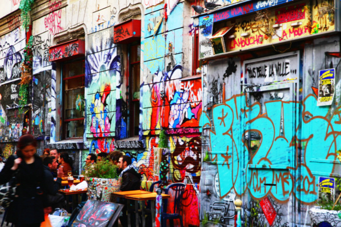

Les Tutos De Wildo
Bases de la photo
La photographie est une technique qui permet de créer des images sans l'action de la main, par l'action de la lumière. Le terme « photographie » désigne aussi l'image obtenue, phototype1 (photographie visible et stable qu'elle soit négative ou positive, qu'on obtient après l'exposition et le traitement d'une couche sensible) ou non. La photographie est le regroupement des techniques d'enregistrement des rayonnements électromagnétiques, réalisé par des procédés photochimiques.

Le symptôme : "Quand ce n'est pas net, c'est flou." Voilà une vérité que La Palice n'aurait pas reniée. La lutte contre le flou de mise au point est l'un des principaux chevaux de bataille des constructeurs, qui y vont à grands coups de collimateurs AF, d'autofocus hybrides laser enrichis à la matière grise et aux savants algorithmes. Donnons-leur raison : parmi tous les flous, le flou de mise au point est sans aucun doute le plus gênant et le plus inesthétique, parce qu'il peut réduire l'impact visuel d'une image. La solution : Lorsque la mise au point est ratée, par exemple en portrait quand l'oreille ou le nez est net alors que vous aviez expressément visé les yeux, c'est rageant. Le mieux reste encore de refaire une photo, lorsque cela est possible, ou de vous débrouiller avec, en publiant ou tirant votre cliché dans des dimensions réduites, pour estomper ce manque de netteté. Si le décalage de mise au point est récurent, il est possible, sur certains APN les plus perfectionnés (généralement des reflex) d'affiner précisément l'autofocus en fonction de chaque objectif. C'est fastidieux mais efficace.


La photographie et le cinéma utilisent, d'une manière générale, les mêmes codes de représentation que la peinture, qui les a précédés, jusqu'à la Première Guerre mondiale. Des courants formalistes commencent alors à mettre en œuvre les moyens expressifs particuliers à la prise de vues photographique, recherchant de nouvelles compositions picturales avec des axes inclinés. C'est vers cette époque qu'on commence à parler de plongée et contre-plongée3. Cependant, leurs recherches ne rejoignent pas la perspective plafonnante. D'une part, ils jouent de toutes les inclinaisons, et d'autre part la perspective qu'on obtient en basculant un appareil photographique ou cinématographique diffère de celle de la peinture. La « fenêtre sur le monde » cesse d'être verticale, et, en conséquence, les lignes verticales du sujet convergent vers le haut, et les parties basses du sujet sont proportionnellement agrandies, à moins que le photographe n'utilise une chambre photographique avec décentrement et bascule. Ces effets sont d'autant plus manifestes que la vue est prise à la courte focale. En photographie de mode, on allonge ainsi les jambes des modèles en les photographiant de plus bas. Dans le paysage, la contre-plongée va de soi face aux édifices imposants, aux pics montagneux, au pied des chemins vertigineux, signalés par les guides touristiques4. Portrait du général Nivelle en contre-plongée. Dans les codes du cinéma et de la photographie, la contre-plongée est souvent utilisée « pour traduire une position dominante, ou effrayante, un sentiment de puissance »5, ou encore pour magnifier le sujet. Toutefois « un cinéma qui s'enfermerait [dans ce procédé de connotation] serait vite voué à la sclérose »6. Dans les scènes d'action, la contre-plongée sert soit pour rendre un mouvement descendant plus spectaculaire en le dirigeant vers le spectateur, soit pour un plan subjectif du protagoniste. Le découpage de l'action en plans successifs offrant une variété d'angles augmente par lui-même la tension dramatique7. On peut comprendre la contre-plongée au cinéma comme le point de vue de l’enfant, celui du prisonnier agenouillé, de l’individu blessé à mort, avec son antonyme, la plongée, le regard du vainqueur sur le vaincu. Mais l'impression qu'elle donne aux spectateurs ne se limite pas à cet aspect. Les célèbres contre-plongées du film Citizen Kane renforcent « l’impression de puissance du magnat de la presse, mais en même temps elles l’enferment sous les plafonds de son empire et montrent comment une contre-plongée peut restreindre la liberté d’un personnage8 ». En résumé, la contre-plongée au cinéma peut grandir moralement un personnage mais peut aussi en souligner les défauts les plus repoussants. Ainsi, les possibilités de son utilisation sont infinies et non pas cantonnées à la seule exaltation d'un personnage et au lyrisme.
Lorsqu’on n’y connait rien en photographie, le cadrage est le dernier des soucis et la composition est souvent oubliée. Or, le fait de bien cadrer et composer une image fait toute la différence entre une photo normale et une photo soignée. Encore une fois, cette étape est incontournable et doit faire partie d’un apprentissage sur le terrain sur le long terme. Lorsqu’on n’y connait rien en photographie, le cadrage est le dernier des soucis et la composition est souvent oubliée. Or, le fait de bien cadrer et composer une image fait toute la différence entre une photo normale et une photo soignée. Encore une fois, cette étape est incontournable et doit faire partie d’un apprentissage sur le terrain sur le long terme. Or, le fait de bien cadrer et composer une image fait toute la différence entre une photo normale et une photo soignée. Lorsqu’on n’y connait rien en photographie, le cadrage est le dernier des soucis et la composition est souvent oubliée. Or, le fait de bien cad Encore une fois, cette étape est incontournable et doit faire partie d’un apprentissage sur le terrain sur le long terme. Lorsqu’on n’y connait rien en photographie, le cadrage est le dernier des soucis et la composition est souvent oubliée. Or, le fait de bien cadrer et composer une image fait toute la différence entre une photo normale et une photo soignée. Encore une fois, cette étape est incontournable et doit faire partie d’un apprentissage sur le terrain sur le long terme. Lorsqu’on n’y connait rien en photographie, le cadrage est le dernier des soucis et la composition est souvent oubliée. Or, le fait de bien ca Encore une fois, cette étape est incontournable et doit faire partie d’un apprentissage sur le terrain sur le long terme. Lorsqu’on n’y connait rien en photographie, le cadrage est le dernier des soucis et la composition est souvent oubliée.

Depuis une dizaine d'années, l'appareil qui a pris le dessus sur les autres et le numérique. Il apporte du plaisir aux amateurs et aux professionnels car il permet de faire un grand nombre de photos que l'on peut garder ou supprimer suivant l'envie de l'utilisateur. Des avantages qui font très vite oublier les photos ratées des argentiques ! De plus, avec l'arrivée des blogs puis de Facebook, les jeunes mais aussi les moins jeunes font de plus en plus de photos d'eux-mêmes et de leur environnement proche pour ensuite les publier, et ainsi faire partager leurs émotions, leurs moments de bonheurs comme ceux de malheurs. Il est en effet bien plus simple, pratique et économique de publier une photo sur internet, quel que soit le site utilisé, que de la faire développer une quinzaine de fois pour l'envoyer à son entourage. Cependant, il est tout de même agréable d'avoir des photos développées chez soi : on se fait toujours un plaisir de feuilleter un album photo en famille. On peut donc dire que l'évolution de l'appareil photo a influencé les usages au cours du temps. C'est une invention remarquable qui permet une certaine liberté et qui, nous l'espérons, sera encore améliorée dans les années à venir.